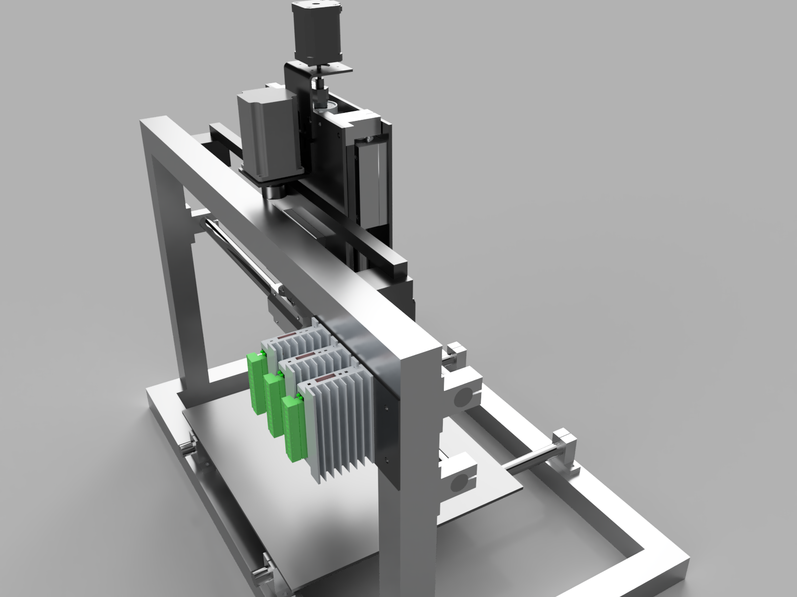
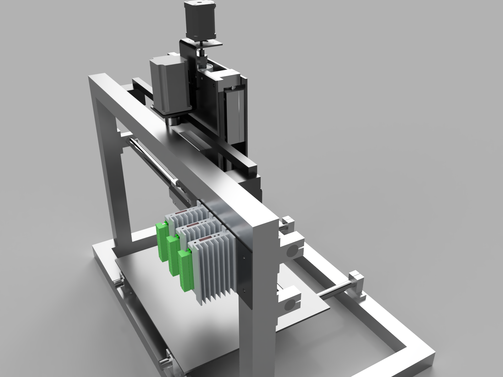

CNC Router - Part 1: Design
Dec 25, 2019 22:33 · 464 words · 3 minute read

Design of lightweight CNC router rebuilt from all-metal 3D Printer.
Design
Major design criteria for CNC router were directly influenced by lessons learned from All-metal 3D Printer
- FDM printer are slow, it's worth sacrificing Z travel for additional rigidity.
- Use single motor for each axis to guarantee squareness after homing.
- As this is still research slash fun project, keep costs low by reusing as many parts as possible.
- Keep it manufacture-able with tools I have, but try limiting places where it will require tuning.
- Try not to over engineer, as it will never be real CNC router without complete rebuild (IMO).
After spending some time in Fusion 360 I've settled on following design:
 

And bill-of-materials above what I had already were:
- 1500mm linear shaft (20mm diameter) for X axis (to be cut in half)
- Two KP001 bearing shaft supports for Z axis screw.
Rigidity considerations and possible mitigations
Two most important lessons I learned from 3D printer projects were:
- Everything is bending.
- Cheap linear bearings are garbage.
 Loading backplate with 100N with actual materials applied to where it makes difference.
Loading backplate with 100N with actual materials applied to where it makes difference.
Backlplate rigidity
Backplate (steel plate to which the tool is mounted) is 4mm thick and I do expect it to bend under load. Simulation in Fusion 360 under around 100N of the load applied at the bottom edge indicated 1.3mm of displacement. I don't know what loads this machine will be experiencing, but I expect to close this plate with L-sections bolted on sides.
This does not take bearing play into account, so I expect it to be way worse than that - at least out of the box.
Linear bearings play
X and Z axes are running on 20mm linear shafts with two SMA20LGUU bearings (each unit consisting of two standard LM20UU bearings, so 4 in total). Those are low quality, import bearings, so a lot of play is expected - especially without proper preload. If it won't be acceptable, I have two possible backup plans:
- Make do-it-yourself adjustable SMA20LGUU by opening side of each bearing with angle grinder and tapping holes for preload adjustment screws (this will require changing internal LM20UU for LM20AJ)
- Exchange each SMA20LGUU bearing into two SMA20AJ bearings (with adjustable preload).
I'd probably take first one, as it's cheaper and won't require new mounting holes, which are easy to be screwed up without proper equipment.
Flexing linear shafts
What surprises me is marginally low displacement of linear shafts indicated by simulation - which I have hard time believing. This will be kind of “last resort” improvement possibility which I'd rather avoid due to high expected costs: instead of regular linear shafts, use supported linear shaft and support it on whole length of X axis with 4040 aluminium extrusions - and consequently exchange linear bearings to open variants like SME20OPL.